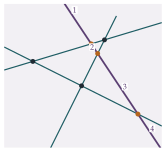

STEP II 1990，第 4 题
继续之前，请先阅读题目（原题为英文）。题目载于 STEP Support Programme 的题目资料库： step.maths.org/questions/90-s2-q4
引子
用 \(n\) 刀直线把一个薄饼切开，各块不必大小相同，最多可以切成多少块？一刀得 \(2\) 块，两刀得 \(4\) 块，三刀得 \(7\) 块（不是 \(8\) 块：不妨试试），四刀得 \(11\) 块。数列 \(1, 2, 4, 7, 11, 16, \ldots\) 称为懒惰宴会承办人数列（lazy caterer’s sequence），而本题要求的正是它的公式。
这道题是一种贯穿整个组合数学（combinatorics）的技巧的第一课：不要试图一次过把所有东西数完，而应该问：多加一个对象时，有甚么改变？而答案原来是欧拉公式（Euler’s formula）\(V - E + F = 2\) 的一个特殊情况，你在 第 7.9 节 讨论柏拉图立体时已经见过这条公式。
动笔之前
仔细画出 \(n = 1, 2, 3, 4\) 的情况，并保持各直线处于一般位置（general position）（没有两条平行，没有三条共点）。数一数每种情况中线段和区域的数目。你能猜出当中的规律吗？
你应该会得到：
| \(n\) | \(0\) | \(1\) | \(2\) | \(3\) | \(4\) |
|---|---|---|---|---|---|
| 线段 | \(0\) | \(1\) | \(4\) | \(9\) | \(16\) |
| 区域 | \(1\) | \(2\) | \(4\) | \(7\) | \(11\) |
线段的数目看来是 \(n^2\)。区域的数目则依次增加 \(1, 2, 3, 4\)：相邻两项之差正是自然数。
逐步解题
阶段 1 数线段
集中看其中一条直线。其余的直线中有多少条与它相交？它们把这条直线切成多少段？
每条直线都与其余 \(n - 1\) 条直线逐一相交（没有一条与它平行），而且交于 \(n - 1\) 个不同的点（没有三条直线交于同一点）。这 \(n - 1\) 个点把该直线切成 \(n\) 段：两端各有一段无限长的，中间有 \(n - 2\) 段有限长的。共有 \(n\) 条直线，所以共有 \[n \times n = n^2 \text{ 条线段}. \qed\] 这是直接计数，无需使用归纳法（induction）：我们是逐条直线去数线段的。
阶段 2 加一条直线时会怎样？
假设已画好 \(n - 1\) 条直线，现在加上第 \(n\) 条。它被其余直线切成 \(n\) 段。每一段对它所穿过的区域有甚么影响？
画出新直线时，它的 \(n\) 段各自穿过一个原有的区域，并把该区域一分为二（图 9.1.1）。不同的线段位于不同的区域内，因为新直线要由一个区域走到另一个区域，就必须越过一条原有的直线。因此，加上第 \(n\) 条直线后，区域的数目恰好增加 \(n\)： \[R(n) = R(n - 1) + n.\]
阶段 3 解递归关系
由 \(R(0) = 1\)（没有直线，只有一个区域）开始， \[R(n) = 1 + (1 + 2 + \cdots + n) = 1 + \frac{n(n + 1)}{2} = \frac{n^2 + n + 2}{2}.\] 若要写成归纳法证明：公式对 \(n = 1\) 成立，因为 \(\frac12(1 + 1 + 2) = 2\)；而若 \(R(n - 1) = \frac12\bigl((n - 1)^2 + (n - 1) + 2\bigr) = \frac12(n^2 - n + 2)\)，则 \(R(n) = \frac12(n^2 - n + 2) + n = \frac12(n^2 + n + 2)\)。■

回顾
每次只数一部分。线段是逐条直线去数的；区域则是按每条新直线所增加的数目去数的。
把几何上的一步化为递归关系。“每条新线段把一个区域一分为二”这项观察，化成了 \(R(n) = R(n - 1) + n\)。
一般位置十分重要。若有平行的直线，或有三条直线共点，区域的数目就会较少。试找出每项假设在哪里用过。
背后的数学
乔装的欧拉公式
以下是第二个证明，它不仅推导出答案，更解释了答案从何而来。把这些直线组成的图形看成一幅地图：交点是顶点（vertices），线段是边（edges），区域是面（faces）。图中有 \(V = \binom{n}{2}\) 个顶点（每一对直线对应一个）和 \(E = n^2\) 条边。无限长的线段只有一个端点，所以我们额外加上一个“在无穷远处”的顶点，让它们全部在那里相遇；这样，整幅图就成为画在球面上的地图（想像把平面包在一个球上，无穷远点位于球顶）。由 第 7.9 节 的欧拉公式 \(V - E + F = 2\) 可得 \[\Bigl(\binom{n}{2} + 1\Bigr) - n^2 + F = 2, \qquad\text{所以}\qquad F = n^2 - \frac{n(n - 1)}{2} + 1 = \frac{n^2 + n + 2}{2}.\] 同一个数，却来自完全不同的方向。这些区域还可以整齐地分成两类：其中 \(2n\) 个是无界的（每两条相邻的无限射线之间有一个），其余 \(\frac12(n^2 + n + 2) - 2n = \binom{n - 1}{2}\) 个是有界的。
二项式系数与高维空间
这条公式可以写成 \[R(n) = \binom{n}{0} + \binom{n}{1} + \binom{n}{2},\] 而这并非巧合。把图形转动，使得没有一条直线是水平的。一个下方有界的区域必有一个最低点，而这个点必定是交点；每个交点又恰好是一个区域（即它正上方的那个）的最低点：这样就得到 \(\binom{n}{2}\) 个区域，每一对直线对应一个。其余每个区域都向下无限延伸，因而会与一条画在所有交点下方很远处的水平线相遇；那 \(n\) 条直线把这条水平线切成 \(n + 1\) 个区间，每个这样的区域内各有一个。合共 \(\binom{n}{2} + n + 1\) 个。在三维空间中，\(n\) 个处于一般位置的平面把空间切成 \[\binom{n}{0} + \binom{n}{1} + \binom{n}{2} + \binom{n}{3} = \frac{n^3 + 5n + 6}{6}\] 块（即蛋糕数（cake numbers）\(1, 2, 4, 8, 15, 26, \ldots\)），而这个规律在任何维数都成立。证明用的是同一个归纳法：新加的平面被其余平面切成若干区域，其排列方式就如平面上的直线所分成的区域，而每个这样的区域都把一块空间一分为二。
直线和平面所分割出的区域数目的公式，是施泰纳（Jakob Steiner）在 1826 年发现的。今天，它是超平面排列（hyperplane arrangements）理论的起点；这套理论计数任意一组直线、平面及其高维类比所形成的区域数目，包括并非处于一般位置的情况。Thomas Zaslavsky 在 1975 年证明了一条非凡的定理：利用一个记录了哪些超平面相交的多项式，就可以数出任何排列的区域数目。同样的想法也出现在机器学习之中：由“ReLU”单元构成的神经网络，会用超平面把输入空间切成多个区域，而区域的数目正好衡量它所能表示的函数有多复杂。
思维技巧
要计数由 \(n\) 个对象组成的构形，可把它与 \(n - 1\) 个对象的构形比较。计数其中的改变，往往比计数整体容易得多。
这是把归纳法用作发现的工具，而不仅是证明的工具。它是组合数学中最常见的手法之一，能把几何问题化为可以求解的递归关系（recurrence relation）。
延伸练习
圆。证明：若 \(n\) 个圆中每两个都交于两点，且没有三个圆共点，则它们把平面分成 \(n^2 - n + 2\) 个区域。
平行线。若 \(n\) 条直线中有 \(k\) 条互相平行（其余方面均处于一般位置），共有多少个区域？
蛋糕数。用归纳法证明：\(n\) 个处于一般位置的平面把空间分成 \(\frac16(n^3 + 5n + 6)\) 个区域。
会失效的规律。在圆周上取 \(n\) 个点，并把每一对点用弦连起来，其中没有三条弦在圆内交于同一点。当 \(n = 1, 2, 3, 4, 5\) 时，分别得到 \(1, 2, 4, 8, 16\) 个区域。数一数 \(n = 6\) 时的区域数目。（提示：使用欧拉公式；每四个点给出一个交点。）证明区域的数目是 \(1 + \binom{n}{2} + \binom{n}{4}\)。
延伸阅读
Ronald Graham, Donald Knuth & Oren Patashnik, Concrete Mathematics（Addison-Wesley），第 1 章。开首讨论的正是这个问题，还有“薄饼”和“之字形”的变化题。
Miklós Bóna, A Walk Through Combinatorics（World Scientific）。一本平易近人的入门教材，设有归纳法、图和欧拉公式等章节。
Richard Guy, “The strong law of small numbers”，American Mathematical Monthly 95 (1988)。收录了许多看似明显、其实不成立的规律，包括练习中的圆问题。